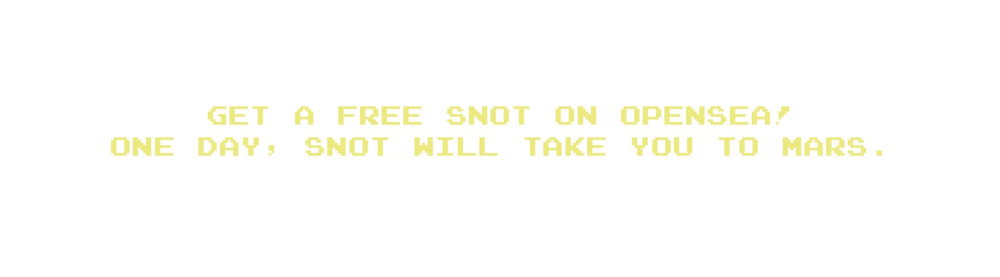
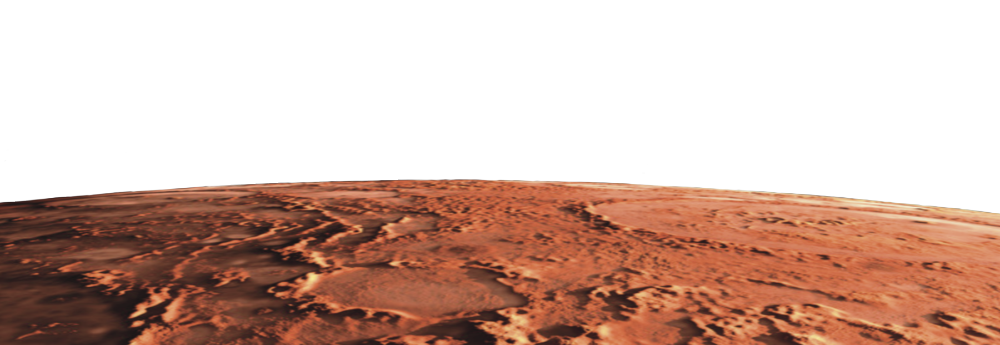
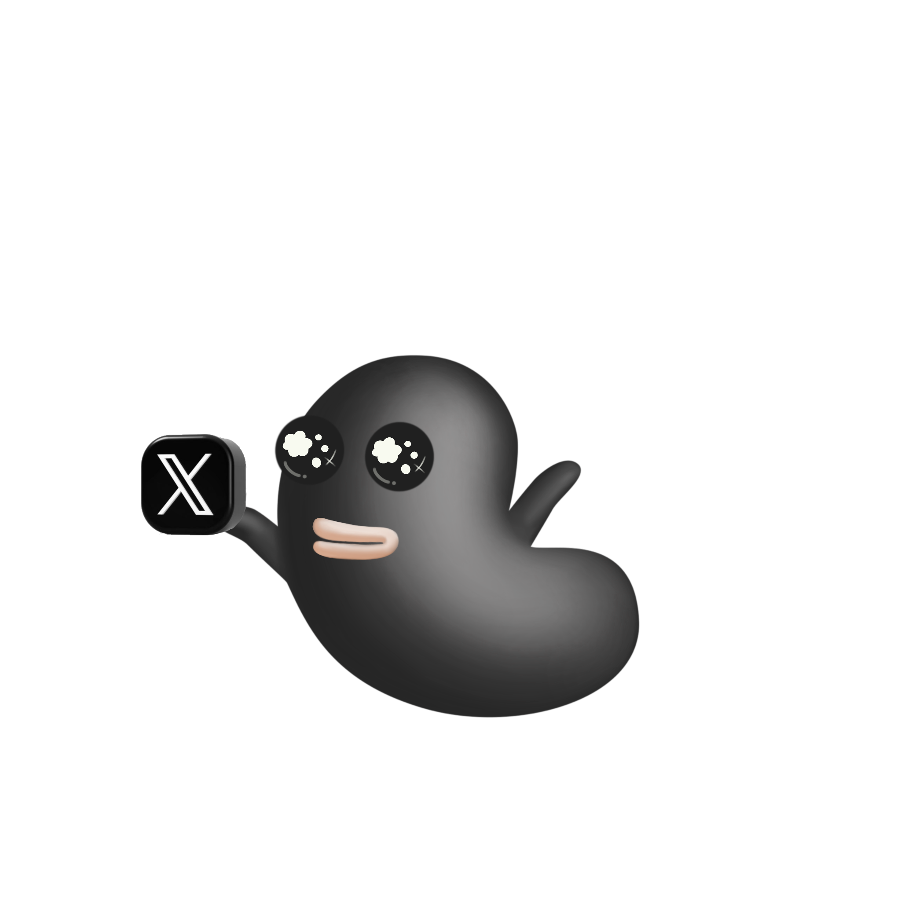
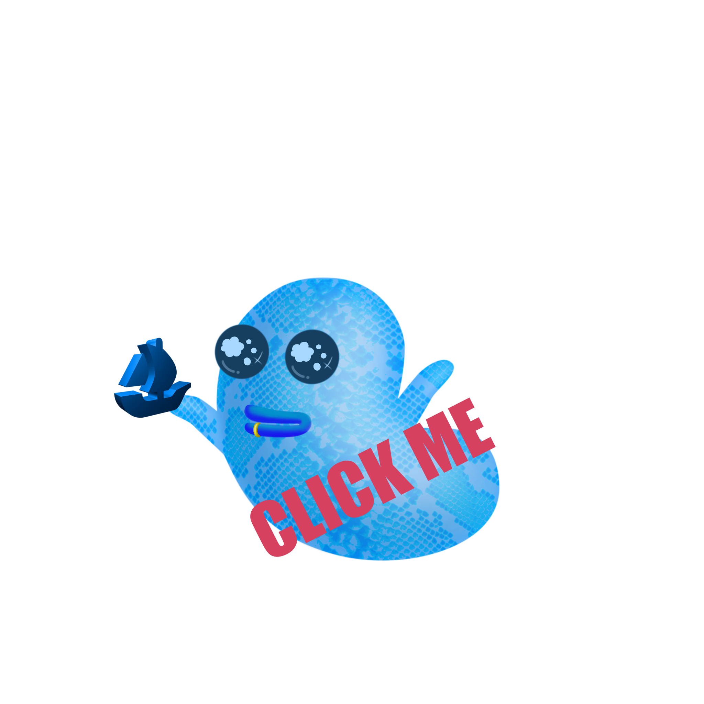
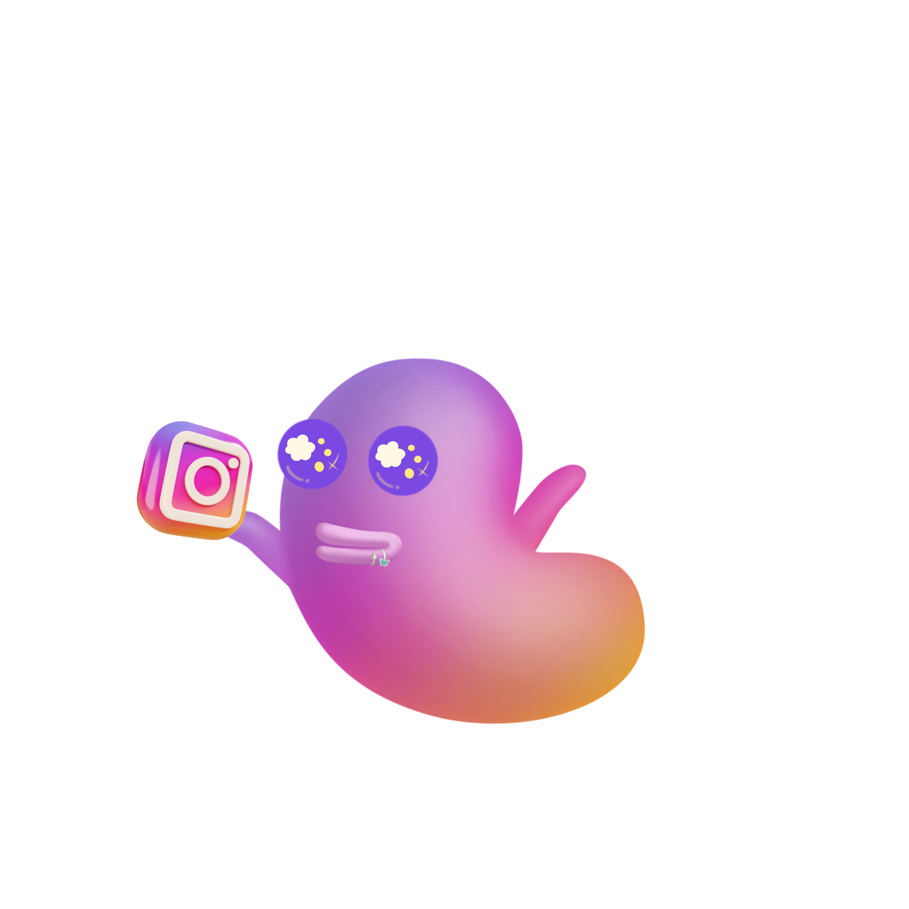

ChatGPT 4o

나의 말:
<!DOCTYPE html>
<html lang="ko">
<head>
    <meta charset="UTF-8">
    <meta name="viewport" content="width=device-width, initial-scale=1.0">
    <title>Space Snot</title>
    <link rel="stylesheet" href="styles.css">
</head>
<body>

    <!-- 시작 비디오 -->
    <video id="start-video" autoplay muted playsinline>
        <source src="video/start-video.mp4" type="video/mp4">
        Your browser does not support the video tag.
    </video>

    <!-- 배경 비디오 -->
    <video id="background-video" autoplay muted loop playsinline>
        <source src="video/background-video.mp4" type="video/mp4">
        Your browser does not support the video tag.
    </video>

    <!-- 메인 컨텐츠 -->
    <div id="main-content">
        

        <div class="main-images">
            <!-- 기존 비디오를 이미지로 대체하고 사이즈를 줄임 -->
            
            
            <div class="image-container">
                
                <div class="links">
                    <a href="https://www.youtube.com" target="_blank">
                        
                    </a>
                    <a href="https://opensea.io/kr" target="_blank">
                        
                    </a>
                    <a href="https://www.instagram.com" target="_blank">
                        
                    </a>
                </div>
            </div>
        </div>
    </div>

    <footer id="footer">
        <p>&copy; 2024 Space Snot. All rights reserved.</p>
    </footer>

    <script>
        document.addEventListener('DOMContentLoaded', function() {
            const startVideo = document.getElementById('start-video');

            // 비디오가 끝나면 서서히 사라지게 설정
            startVideo.addEventListener('ended', function() {
                startVideo.style.transition = 'opacity 1s ease';
                startVideo.style.opacity = '0';
                setTimeout(() => {
                    startVideo.style.display = 'none';
                }, 1000); // 애니메이션이 완료된 후 비디오를 완전히 숨김
            });
        });
    </script>
</body>
</html>
 